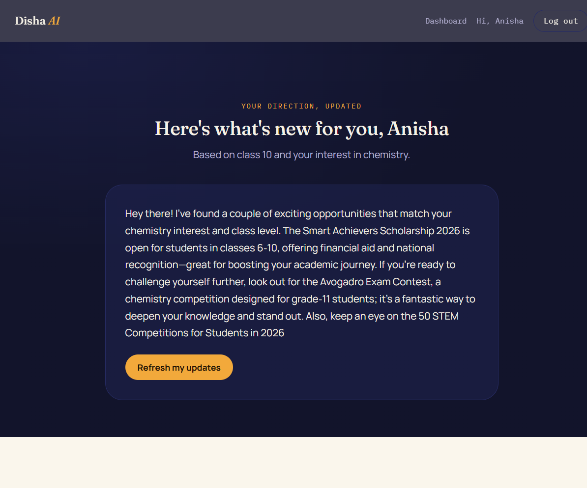
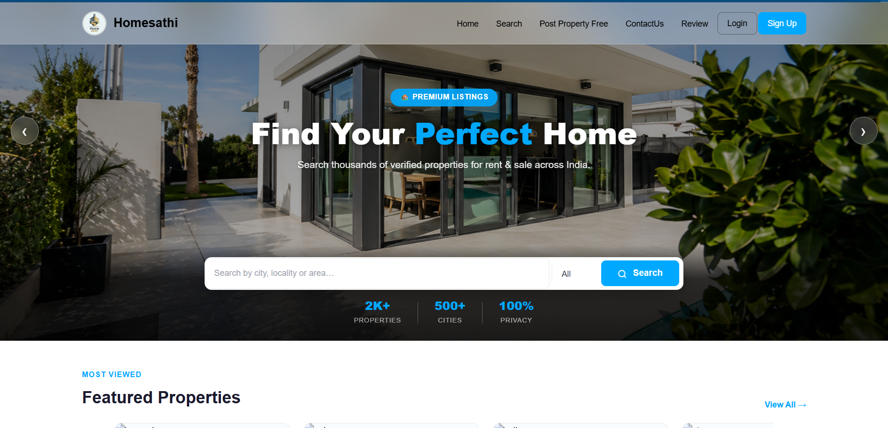
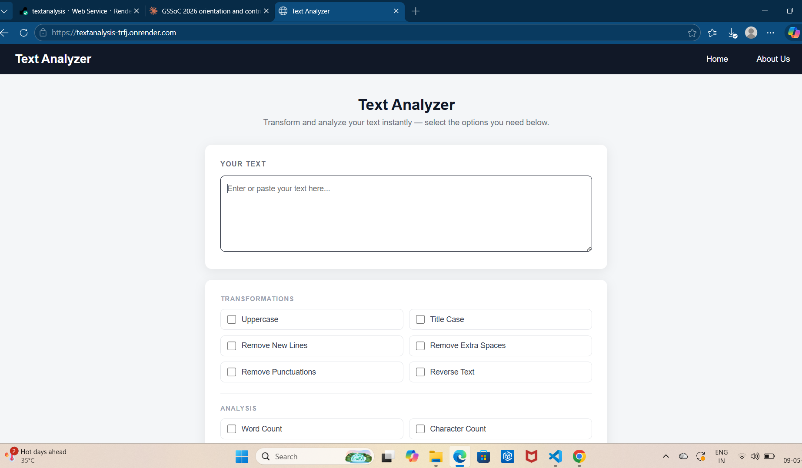
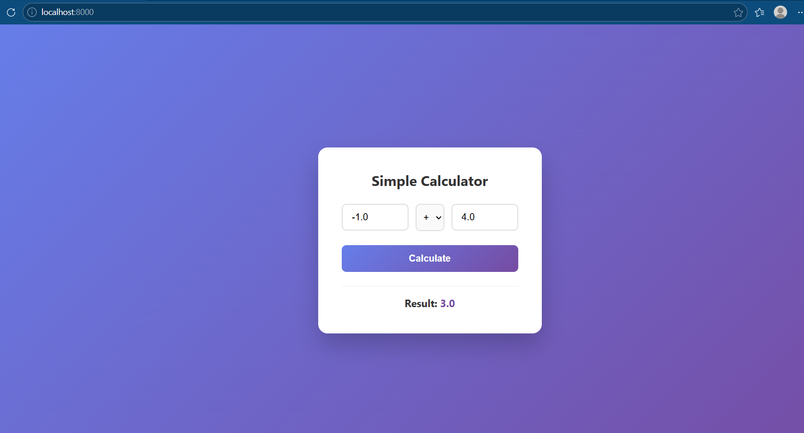
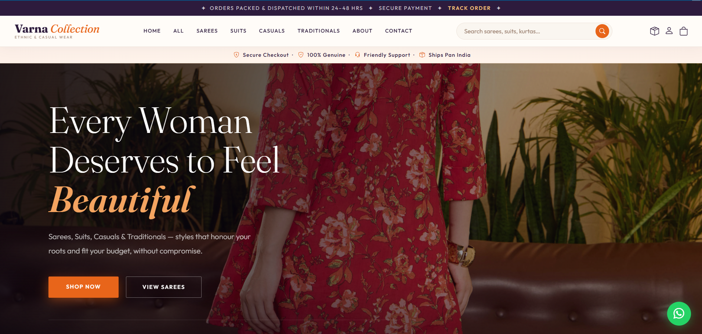

Software Engineer · Python & Django Developer
I help startups and small teams build fast, secure, and scalable web applications — business websites, REST APIs, dashboards, and authentication systems — using Python, Django, and modern web technologies.
Currently shipping fixes across production open-source codebases and building Disha AI, a multi-agent career-guidance platform, as part of an IBM SkillsBuild internship — while going deeper into Python's data and AI-agent tooling.
A BCA graduate with a strong foundation in Python, Django, and web development — I build real applications with clean, maintainable code: typed service layers, graceful fallbacks, and test coverage, not code that just happens to run once.
Active contributor with GirlScript Summer of Code 2026, shipping pull requests across three production codebases in Python/Django and TypeScript/Next.js — resolving backend security, caching, and API-integration issues under maintainer review.
I inspect the actual state of a codebase before proposing a plan, so what I ship matches what a repo actually needs — not what I assumed it needed.
Responsive, mobile-first sites for small businesses and startups — built on Django, from landing pages to full content-managed platforms.
Clean, documented APIs with proper service layers, error handling, and Postman-tested endpoints ready for a frontend team to build against.
Internal tools and admin panels for managing listings, users, and data — the kind I built for HomeSathi's owner-side workflows.
Role-based authentication, email verification, and secure password reset flows — production-tested, not tutorial-grade.
Normalized MySQL schemas or MongoDB document models, designed around how your application actually queries data.

A multi-agent career-guidance platform, built as the capstone for an IBM SkillsBuild × AICTE × BharatCares internship. A LangGraph agent pipeline backed by the Gemini API, served through FastAPI and a React frontend.

A full-stack property rental platform for owners and buyers. Role-based auth, secure password reset, listings, search, messaging, and reviews — built with a 2-person team.

A live text-processing tool on Django's MVC architecture — word/character count, sentence analysis, and case conversion, deployed on Render.

Calculator logic in core Python with a plain HTML/CSS interface — built to strengthen fundamentals in logic and Python-to-frontend integration.

An e-commerce storefront for a women's ethnic and casual wear label, built end-to-end with a distinctive visual identity. Deploying soon.
Typed service layers, graceful fallbacks, and test coverage — code built to hold up in production, not just run once.
I inspect a codebase's actual state before proposing a plan, so what I ship matches what it really needs.
Pull requests merged across three production codebases under real maintainer review — not solo tutorial projects.
Early in my career and self-directed — I pick up new tools quickly and need minimal hand-holding.
Open to internships, freelance work, and entry-level roles — remote or on-site.
Let's Discuss Your ProjectI'm currently open to internship, freelance, and entry-level opportunities. If you think there's a fit, I'd love to hear from you — even if it's just a conversation.